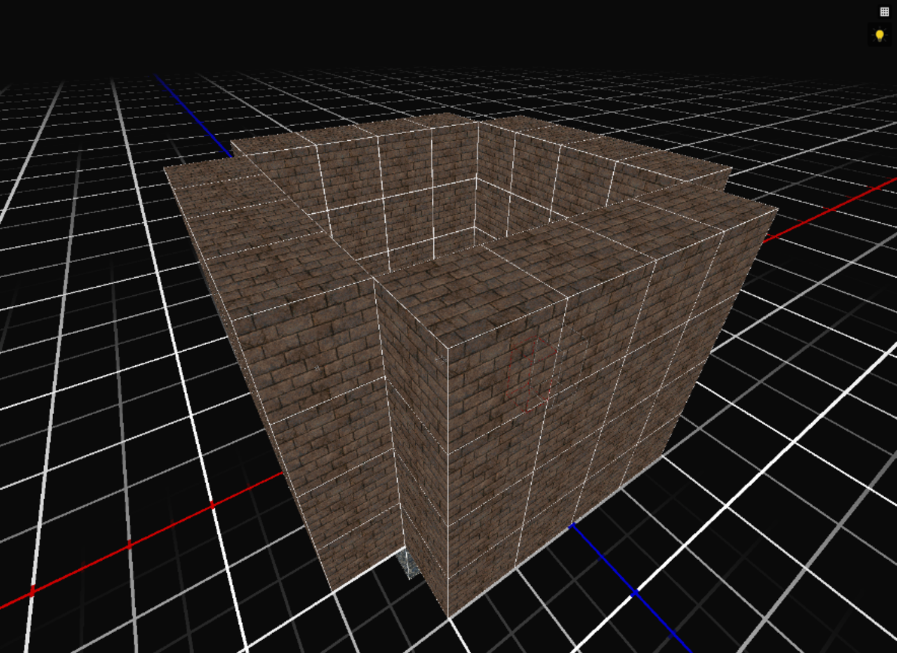
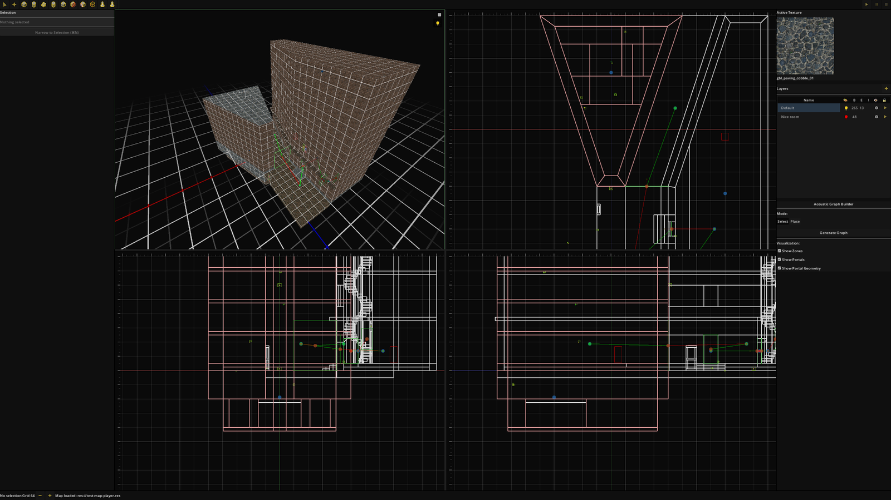
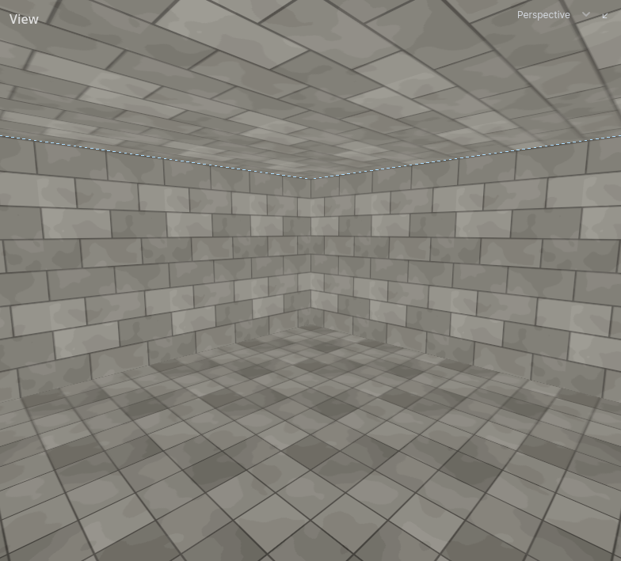
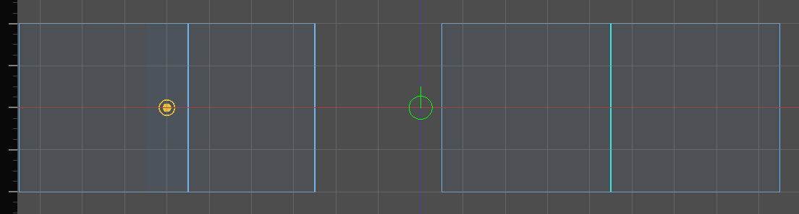

Draft. Not listed on the blog and not indexed.
Carved, not built: how Hammerite learned to dig
For most of its life Hammerite built levels the way most editors do: you placed solid blocks in empty space. That meant the sound for every room had to be wired up by hand. In August I turned the world inside out. Now solid is the default and you carve out the air, and the editor works out the rooms and the doorways between them by itself.
Hammerite started as a brush editor like Valve's Hammer and the Quake editors: the level is empty space, and you add solid blocks to it until there is something to stand on. (How it got from there to here is a story of its own.) That worked well enough until City of Thieves, the stealth game I am making with it, needed sound.
A stealth game needs sound to work properly. You should hear footsteps through a doorway, and a guard should hear you in the next room but not through a metre of stone. In November 2025 I gave City of Thieves an audio system inspired by the Thief games, where sound travels from room to room through the openings between them. For that the game has to know what the rooms are and where the doorways are.
The trouble with adding
In an additive world the editor does not know any of that. "Solid" just means "inside some brush". Walls are slabs placed side by side, floors are slabs, and the faces where two slabs touch are hidden by checking which ones lie flat against each other. There is no room anywhere in that description. A room is just the space that is left over between the slabs.

My first attempt tried to find the rooms automatically, by filling the level with voxels and grouping them into zones. I deleted it the next day. What replaced it was the honest version: you placed an audio zone by hand in every room, and a portal in every doorway, a quad with a position, a normal, a width and a height. The graph builder then cast rays out from each portal to guess which zones it connected.
It worked, but it needed care. Every change to a level meant checking the markers again. Moving a wall meant moving the portal in it, and a new corridor needed its own zone. Or as the commit that finally retired the system put it:
A designer could also simply forget a room.
The tool for placing all of this was over a thousand lines of code, and nothing it produced said anything that was not already in the level's geometry. It just made a person say it a second time.

Turning the world inside out
The idea is a lot older than Hammerite. Dromed, Looking Glass's editor for the Thief games, starts every level as solid rock. You don't build a room there, you dig it. And a dug room is exactly what an audio system wants: a volume of air, with openings to its neighbours where two dug spaces meet.
So in August 2026 I wrote an 1,800-line design document and spent a week, 188 commits, turning Hammerite into a subtractive editor. The document was clear that this was not a new tool mode:
It is baked into the definition of solidity itself.
Solid became the default. Air brushes carve rooms out of it, and solid brushes put rock back. Every room, every opening and every visible wall is derived: recompiled from the brushes on each edit and never saved. The goal was a world that always knows its own rooms and keeps that up to date while you work. In the document's words, "the compiler's output has a consumer waiting". That consumer was the audio system, which had been fed by hand until then.
The additive editor had a subtract tool too, which cut pieces out of solid brushes. But cutting holes in slabs still leaves you with slabs. What changed was what the editor thinks the world is made of.

How the compiler works
Every time a brush changes, the compiler runs the level through six steps:
- The program. The structural brushes are put in order: air carves, solid puts rock back, and a later brush wins over an earlier one where they overlap. Detail brushes, such as furniture made of brushes, take no part. The order is cached and only worked out again when something that affects it changes.
- Solids. Running the program as constructive solid geometry gives the rock as a set of convex pieces.
- Cells. The air comes out the same way, as convex cells. Connected cells are grouped into a region, which is a room as a player would see it: a pillar splits a hall into four cells, but it is still one hall.
- Portals. Wherever two rooms meet there is a portal. Rooms that abut, two air brushes touching on a shared wall, get an aperture: a real opening polygon, a doorway. Rooms that overlap flow into each other with no wall between them, and become one continuous space. That gives the one rule an author has to learn: overlap to extend a space, abut to divide one.
- Faces. Of all the brushes' faces, only the ones that face into air are kept. A face points out of its own brush, so a room's floor is the face of its air brush that points down, into the rock.
- Walls. The openings are cut out of the kept faces, which leaves the walls that are actually drawn, lit and heard.

None of this is saved. A map stores only what an author made: brushes, faces and entities. Anything attached to a derived thing has to live on something authored. A doorway's name, for example, is stored on the faces it was cut from, so it survives the doorway being recompiled from scratch.
Recompiling everything on every edit would be slow on a big level, so it doesn't. An edit recompiles only what the changed brush could have reached: where it was, and where it is now. The work is spread over every core, and since Hammerite 2.0 all of it is native code. On a 256-room test level a one-brush edit recompiles in 25 milliseconds.
What I got for free
Once the world knows its rooms, everything that needs rooms can just ask.
- Sound. An audio zone is now just a room, and a portal is just an opening. The thousand-line tool for placing them was replaced by one less than half its size, which only lets you name a doorway, so a game can open and close it. Whether a room counts as indoors, how it reverberates and whether rain is heard in it became properties of the air brush, and their defaults are worked out from the room.
- Light. The lightmapper bakes the walls the compiler produces, so a room is lit the moment it is carved. Daylight enters any room that can see the sky through a chain of openings.
- Navigation. The navigation addon, written the same week as the refactor, was built on the carved world from its first commit. Walkable ground is the floor of the air.
- Line of sight. Whether a guard can see the player is a walk through the cells along the line between them.

Prior art
None of these ideas are new. Hammerite owes most of them to a handful of editors and one paper.
- Dromed, Looking Glass Studios' editor for Thief: The Dark Project (1998) and its sequels. The world starts solid, terrain brushes fill space with air, solid or water, and later brushes win. Changes to the brushes show up only after portalizing, a full rebuild of the level. Its sound travels room to room, around corners and through doors, but the rooms are room brushes an author places by hand, with a pair around every door so the door can block sound (Spike14's DROMED tutorial; room brush advice on TTLG). You could say Hammerite's audio is Dromed's room brushes worked out from the terrain brushes, and its compiler is a portalize small enough to run on every edit.
- UnrealEd, whose world was solid by default too: you subtract the spaces players move through and add detail back inside them (Unreal Wiki: Subtraction and Addition).
- Quake's tools, which take the additive approach to its conclusion. The level has to seal the void completely, or the compiler reports a leak, and the portals between its spaces are found afterwards, for working out what can be seen from where (Quake Wiki: VIS).
- Cells and portals as a structure go back to Seth Teller and Carlo Séquin's "Visibility preprocessing for interactive walkthroughs" (SIGGRAPH 1991), which divides a model into cells joined by portals. Hammerite uses the same graph for sound, light and navigation, not for visibility.
What next
The audio system that started all this now gets its rooms for free, and so does everything built since. If you want to try carving a few rooms yourself, the Hammerite docs start with exactly that.
- Elli